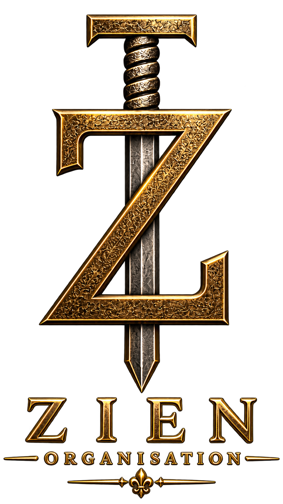
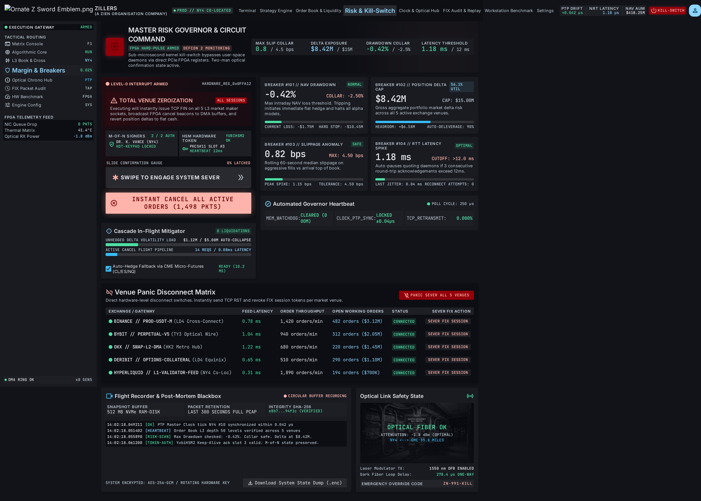
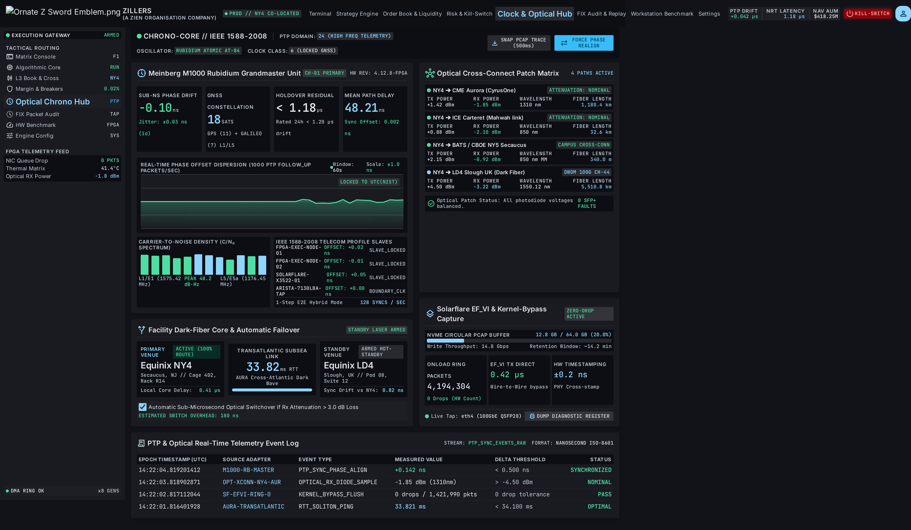
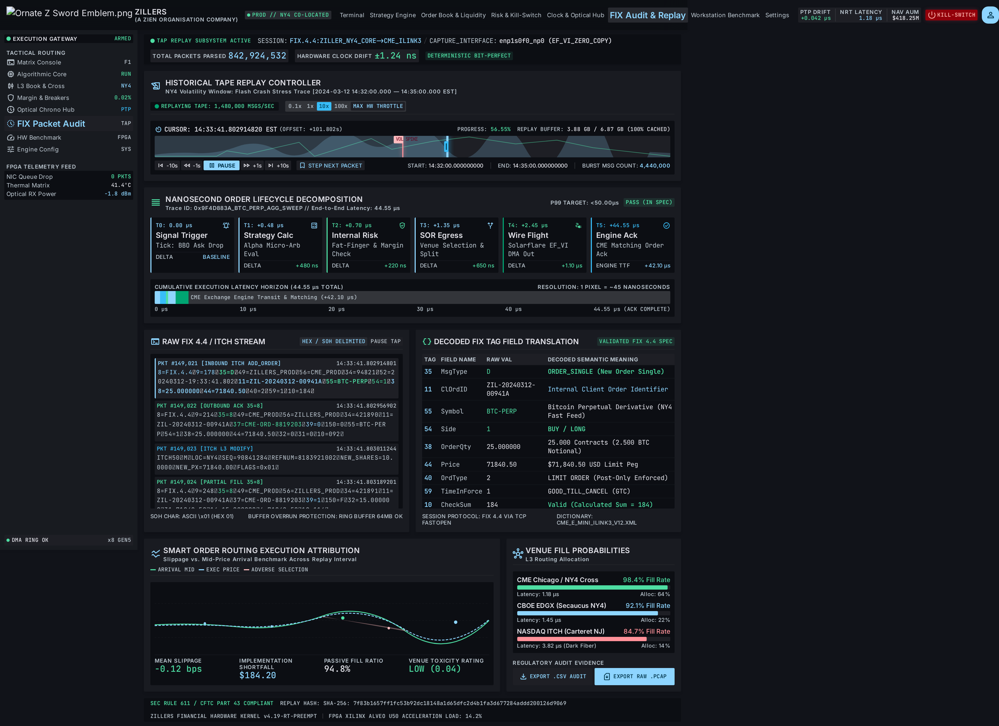
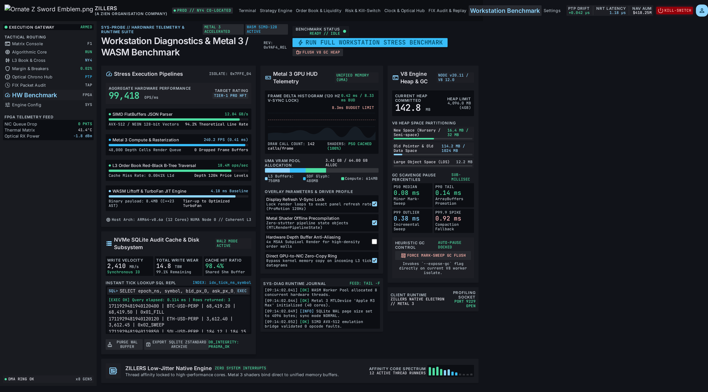
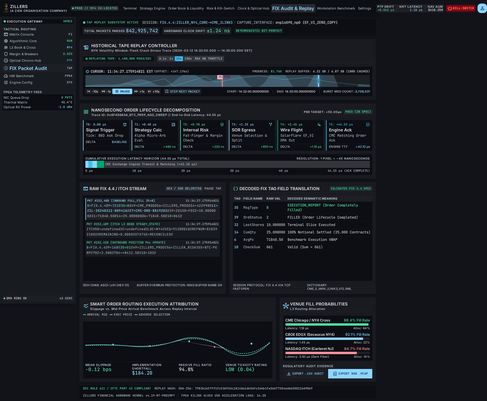
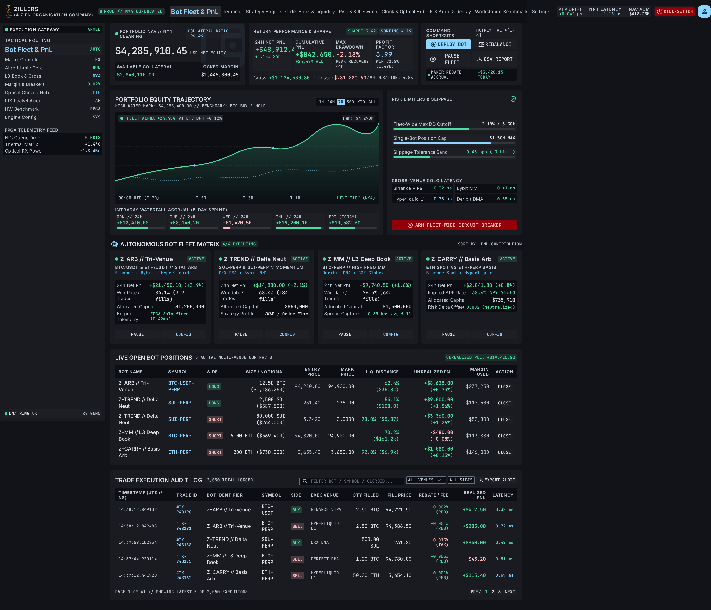
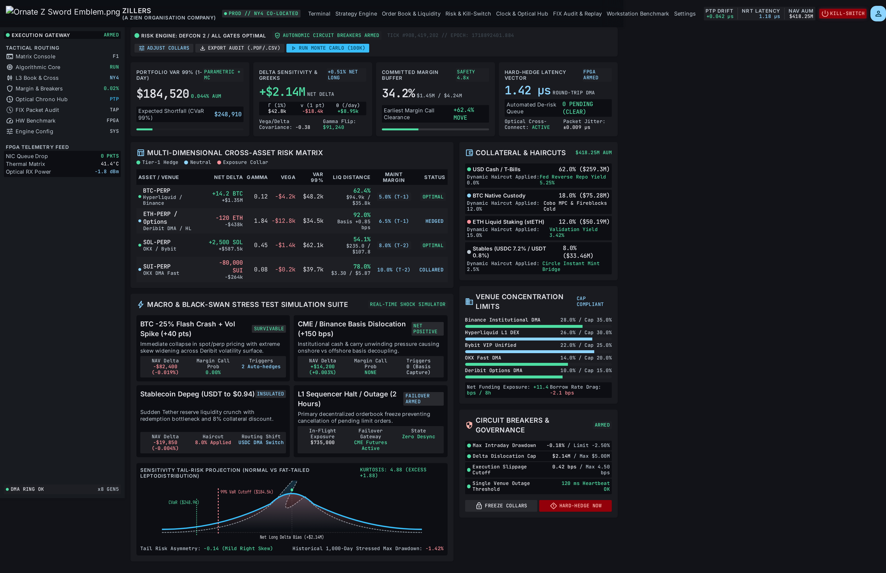

01
ZILLERS - Main Dashboard
Screen ID: 6d8203d05f8b47d994c5574ce4c9b8a7
Stitch source export · 15 screenshots · 14 original HTML documents · 1 image-only emblem
Exported 2026-11-01. Original HTML may load external fonts, libraries and images. Source manifest and verification
Screen ID: 6d8203d05f8b47d994c5574ce4c9b8a7

Screen ID: 149635b64c504a11884114f9d4d1301b

Screen ID: aeef46e2bc454f69bc3a76305fc25e96

Screen ID: dd6505323ba646678ec39d2237fb1a12

Screen ID: bc793cd7efb74ee2be84c015c991cc44

Screen ID: 4ce4c5349c91453bb20c466096c58dfb

Screen ID: b827295066ff411f99a2710c8a57ab9b

Screen ID: 9290077997175161156

Screen ID: 9386b6f06f3b4423b75364fbf7091854

Screen ID: 544c530bedc245969dcbcc19b72edad4

Screen ID: 1a985f49c71f4b73a64fb48b6ebb62f3

Screen ID: 2114a2a7a28841e492e858ccc5b7e466

Screen ID: ab8d8ab5318e457191046f58330f806a

Screen ID: 047279e68df7448282e787f7481fb1e2

Screen ID: b60ebae267484e389da02406293a130e